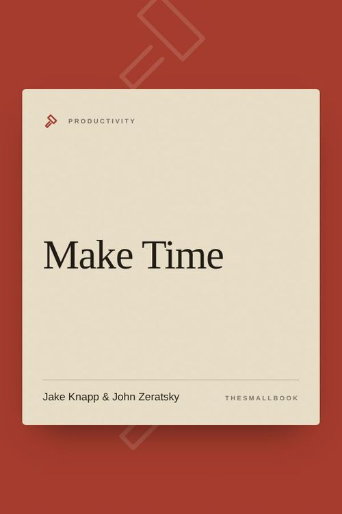

Library › Authors › Jake Knapp & John Zeratsky
Books by Jake Knapp & John Zeratsky
Jake Knapp & John Zeratsky has one book in the library. Every book here is read down to the big idea, the lessons, the lines worth keeping and the actions worth taking. Start with the summary, then buy the full book if it earns a place on your shelf.

Make Time
2018 · 8 min · 6 lessons
You can't add hours, but you can design them: one Highlight a day, and a phone that works for you, not on you.
Jake Knapp and John Zeratsky - the Google designers behind time-management systems used by millions - wrote Make Time after realizing their own 'productivity' tools made them busier, not happier. Their system is radically simple: every day, pick ONE Highlight (the thing that matters most), make time for it with a laser (remove distractions), and energize yourself with real breaks (move, eat, sleep, unplug). The infinity pool - the endless feed of distractions - is the enemy; you can't quit it, but you can design...
Lessons in the summary
- The Highlight: One Intention Per Day
- The Laser: Design Out Distraction
- Energize: The Body Runs the Mind
- The Infinity Pool: Know Your Enemy
- Design Days, Not Decades
- Choose One Highlight Each Day and Protect It
Lines worth keeping
- Busy-ness is not a virtue; it's a trap.
- The Highlight is the one thing you want to make sure happens today.
- The infinity pool is the default state of modern life - the battle is to swim against it.
Questions Jake Knapp & John Zeratsky helps answer
Read nearby authors next
- Robin Sharma 5 books
- Cal Newport 4 books
- Daniel H. Pink 3 books
- Nir Eyal 3 books
- Atul Gawande 2 books
- Brian Tracy 2 books
- Johann Hari 2 books
- Josh Kaufman 2 books
Questions Jake Knapp & John Zeratsky helps answer
Where should I start with Jake Knapp & John Zeratsky? Start with Make Time: You can't add hours, but you can design them: one Highlight a day, and a phone that works for you, not on you.